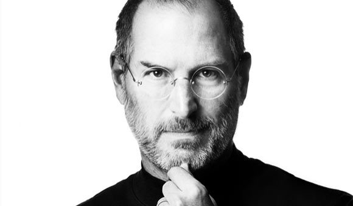

乔布斯
苹果公司联合创始人

乔布斯美国苹果公司联合创始人史蒂夫 · 乔布斯（Steve Jobs，1955 年 2 月 24 日—2011 年 10 月 5 日 ），出生于美国加利福尼亚州旧金山，美国发明家、企业家、美国苹果公司联合创办人。
- 1955 - 史蒂夫 · 乔布斯出生在美国旧金山
- 1974 - 南亚次大陆最炎热的时节，他来到了印度朝圣
- 1976 - 乔布斯、沃兹及乔布斯的朋友龙 · 韦恩签署了一份合同，决定成立一家电脑公司。
- 1977 - 乔布斯在美国第一次计算机展览会展示了苹果 Ⅱ 号样机。
- 1980 - 苹果公司股票公开上市，在不到一个小时内，460 万股全被抢购一空，当日以每股 29 美元收市。
- 1983 - Lisa 数据库和 Apple Iie 发布，售价分别为 9998 美元和 1395 美元。但是 Lisa 的昂贵的售价是没有多少市场的，而 Lisa 又侵吞了 Apple 大量研发经费。
- 1986 - 乔布斯花 1000 万美元从乔治 · 卢卡斯手中收购了 Lucasfilm 旗下位于加利福尼亚州 Emeryville 的电脑动画效果工作室，并成立独立公司皮克斯动画工作室。
- 1996 - 苹果公司经营陷入困局，其市场份额也由鼎盛的 16% 跌到 4%。与之相对应的是乔布斯公司由于《玩具总动员》而名声大振，个人身价达到 10 亿美元。
- 1997 - 苹果推出 iMac，创新的外壳颜色透明设计使得产品大卖，并让苹果度过财政危机。苹果又推出 Mac OS X 操作系统。
2000 - 科技股泡沫，乔布斯又提出将 PC 设计成 “数字中枢 “先进理念，并先后开发出 iTunes 和 iPod，同时也开始在黄金地段开设专卖店并大获成功。随后 Apple TV 和 iTunes Store 等一系列产品受到了市场的好评和认可。
- 2007 - 苹果公司又推出自有设计的 iPhone 手机，使用 iOS 系统，随后发布新一代 iPhone 3G 以及 iPhone 3GS。
- 2010 - 又发布第四代产品 iPhone 4，每次上市都引得了世界极大的疯狂和销售热潮。
- 2011 - 史蒂夫 · 乔布斯向苹果董事会提交辞职申请。
参考来源
百度百科